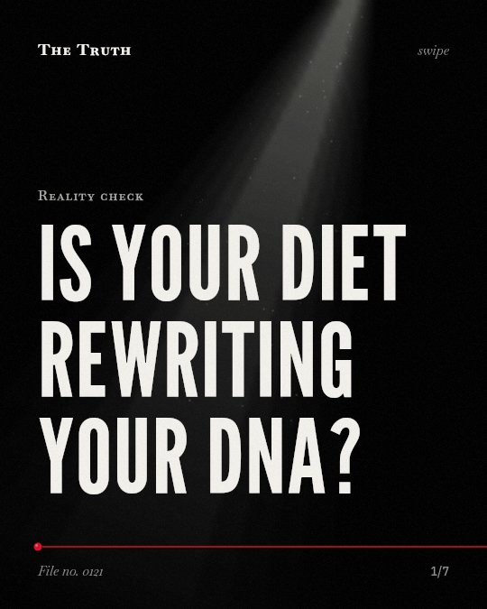

Reality check
Is your diet rewriting your DNA?

Dietary inputs influence your metabolome and gut microbes.
Specific fats and fibers modulate your gut bacteria and the chemicals derived from your food. There is no evidence that modern agriculture has altered your genetic expression.
Supported. At least one solid peer-reviewed study. The evidence is mixed.
What the research found
The quantity and type of fat modulate both beneficial and potentially detrimental microbes, as well as the Firmicutes/Bacteroides ratio in the gut.
“The preclinical evidence suggests that both the quantity and type of fat modulate both beneficial and potentially detrimental microbes, as well as the Firmicutes/Bacteroides ratio in the gut.”
Review, 2020. Yang et al., Nutrients.
Dietary fibers like arabinoxylans, galacto-oligosaccharides, inulin, and oligofructose promote a range of beneficial bacteria and suppress potentially detrimental species.
“Current research shows consistent clinical evidence that dietary fibers, including arabinoxylans, galacto-oligosaccharides, inulin, and oligofructose, promote a range of beneficial bacteria and suppress potentially detrimental species.”
Review, 2020. Yang et al., Nutrients.
The food metabolome is defined as the part of the human metabolome directly derived from the digestion and biotransformation of foods and their constituents.
“The food metabolome is defined as the part of the human metabolome directly derived from the digestion and biotransformation of foods and their constituents.”
Study, 2014. Scalbert et al., American Journal of Clinical Nutrition.
Your food defines your internal chemistry.
The food metabolome is the part of your chemistry derived from digestion. Dietary fibers and fat types change which bacteria live in your gut.
The source of your food matters.
That may be why your internal environment shifts based on what you eat. Your body processes these specific inputs into a unique chemical profile.
This part is our reading of the evidence, not a finding.
The contents of your bowl.
You sit at a table and eat a meal. Every fiber and fat source enters your system to be broken down by your microbes.
The honest summary
The evidence shows that specific dietary inputs significantly influence the human metabolome and gut microbiota composition, but it does not establish a link to fundamental changes in human genetic expression.
The sources lack any data regarding long-term genetic expression or the specific impact of modern agricultural livestock production on human genetics.
What are you feeding your microbes today?
Sources
- Qi Yang, Qi Liang, Biju Balakrishnan et al. (2020). Role of Dietary Nutrients in the Modulation of Gut Microbiota: A Narrative Review. Nutrients. Review, cited 466 times.
- Augustin Scalbert, Lorraine Brennan, Claudine Manach et al. (2014). The food metabolome: a window over dietary exposure. American Journal of Clinical Nutrition. Study, cited 519 times.
Also read for this file, not quoted
- Toderescu et al. (2026). Dietary Polyphenols as Modulators of <i>Bifidobacterium</i> in the Human Gut Microbiota.
- Maier et al. (2017). Impact of Dietary Resistant Starch on the Human Gut Microbiome, Metaproteome, and Metabolome.
- Effinger et al. (2023). A ketogenic diet substantially reshapes the human metabolome.
- Gogolev et al. (2021). OMICs, Epigenetics, and Genome Editing Techniques for Food and Nutritional Security.
This file was researched and drafted by software, then checked by rules a model cannot talk its way around: each quote above was matched word for word against the paper, and every number had to appear in it. How files are made.